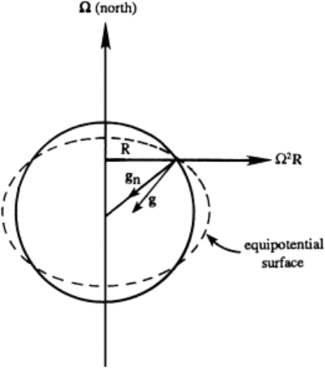

Noninertial Frame of Reference
The third new acceleration term \(\boxed{
- \frac{d \boldsymbol{\Omega}}{dt} \times \mathbf{x}'} \) is caused by changes in the rotation rate of the frame of reference.
It plays a role when rotation speed or the direction of rotation vary with time
The final new acceleration term \(\boxed{- \boldsymbol{\Omega} \times (\boldsymbol{\Omega} \times \mathbf{x}')}\) is the
centrifugal acceleration depends strongly on the rotation rate and the distance of the fluid particle from
the axis of rotation. If the rotation rate is steady and the axis of rotation coincides with the \( z \)-axis of a cylindrical polar coordinate system so that
\(
\boldsymbol{\Omega} = (0, 0, \Omega)\) and \(\mathbf{x}' = (R, \varphi, z)
\)
then
\(
-\boldsymbol{\Omega} \times (\boldsymbol{\Omega} \times \mathbf{x}') = +\Omega^2 \mathbf{R}_E
\)
This additional apparent acceleration can be added to the Newtonian gravitational acceleration \( \mathbf{g}_n \) to define an effective gravity
\(
\mathbf{g} = \mathbf{g}_n + \Omega^2 \mathbf{R}_E
\) 
The effective gravity acceleration value varies slightly over the surface of the earth. The equipotential surfaces are perpendicular to the effective gravity, and the average sea level is one of these equipotential surfaces.
On the earth’s surface
\(
\Phi = gz
\),
where \( z \) is measured perpendicular to an equipotential surface, and \( g \) is the local acceleration caused by the effective gravity.
The earth is really an ellipsoid with equatorial diameter 42 km larger than the polar diameter

1 OpenStax, University physics volume 1. OpenStax CNX. Sep 19, 2016 Download for free at http://cnx.org/content/col12031/1.5.